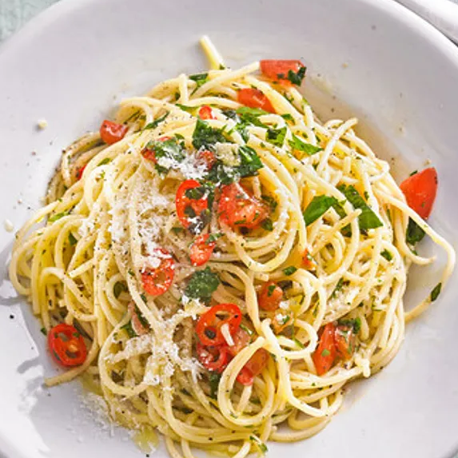
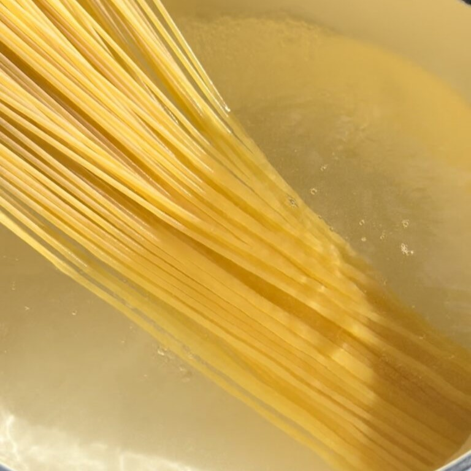

Spaghetti aglio, olio e peperoncino


Zutaten:
(1 Portionen)
| 125g |
Spaghetti (aus Hartweizengrieß) |
| ¼ |
Tomate(n) |
| 1 ¼ |
Knoblauchzehe(n) |
| ½ |
Peperoni |
| ¼ El |
Petersilie |
| ½ Tl |
Gemüsebrühepulver (Delikatessbrühe) |
| 25ml |
Olivenöl, nativ |
| 10 g |
Hartkäse (z. B. Grana Padano oder Pecorino, 1 Jahr Reifegrad) |
| ¼ Tl |
Basilikum |
| ¼ Tl |
Oregano |
| ⅛ Tl |
Salz |
Schritte der Anleitung:
- Zunächst die Spaghetti nach Packungsanleitung kochen. (Anmerkung: Kurz vor Ende der Garzeit benötigt ihr noch 2 Kellen vom Kochwasser, nicht vergessen.)
- Den Hartkäse mit einer Reibe zerkleinern. Die Tomate in kleine Würfel schneiden und in eine Schüssel geben.
- Dann den Knoblauch klein schneiden, leicht salzen, kurz warten und zerdrücken (durch das Salz wird der Knoblauch beim Zerdrücken zu einer Paste). Dies ebenfalls mit in die Schüssel geben.
- Basilikum, Oregano, Petersilie und Peperoni ebenfalls klein schneiden und in die Schüssel geben. Das Delikatessbrühepulver hinzugeben und die Würzmischung ist fertig.
- Nun die 2 Kellen des Kochwassers hinzugeben (unbedingt dieses Wasser verwenden, denn die Nudeln haben beim Kochen eine Menge Stärke abgegeben, die wir brauchen). Alles gut verrühren und 2 Minuten ziehen lassen. Wenn die Würzmischung leicht versalzen schmeckt, ist sie richtig.
- Die Nudeln gut abtropfen lassen und in einer heißen Pfanne maximal 1 Minute schwenken.
- Nun die Würzmischung hinzugeben, gut durchschwenken und dann den geriebenen Hartkäse hinzugeben. Dieser wirkt als Bindemittel und die flüssige Würzmischung verbindet sich nun mit den Nudeln.
- Vor dem Servieren noch das kalte Olivenöl darübergeben und vermischen. Nicht vorher! Das Öl verliert extrem an Geschmack und Qualität, wenn es erhitzt wird. Bei Bedarf jetzt noch etwas Hartkäse oben draufgeben.
- Wie in vielen italienischen Rezepten ist es vor allem die korrekte Zubereitung, die den Unterschied macht.